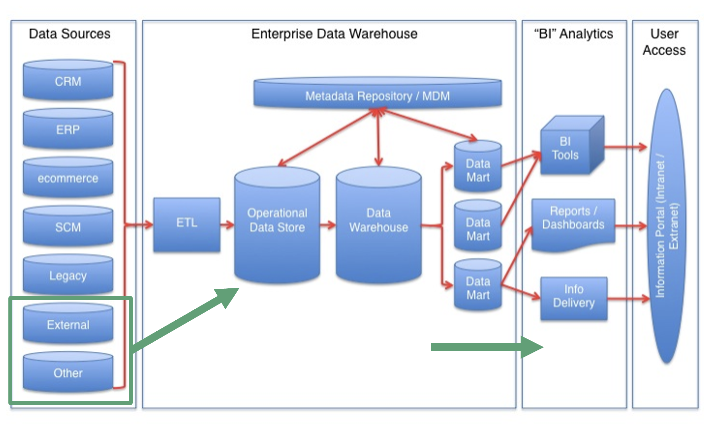
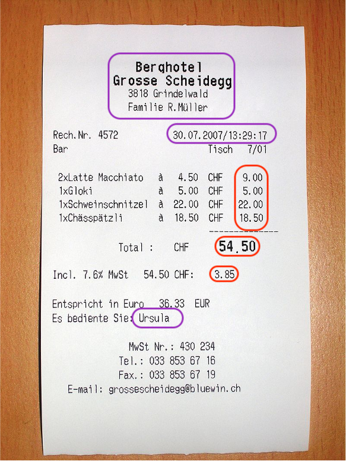
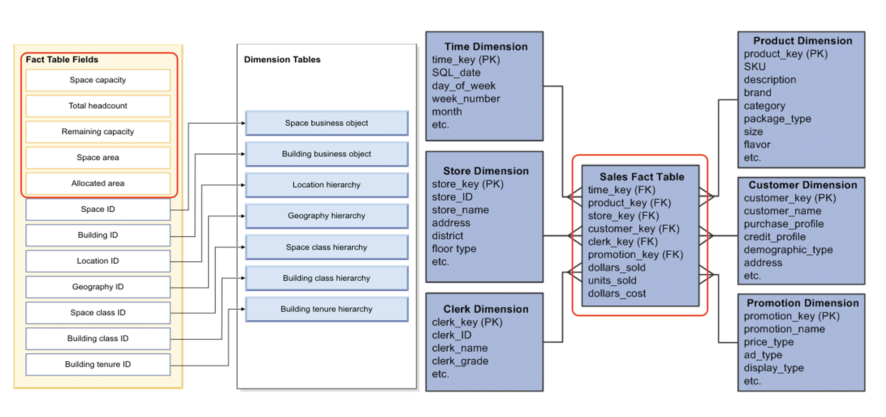
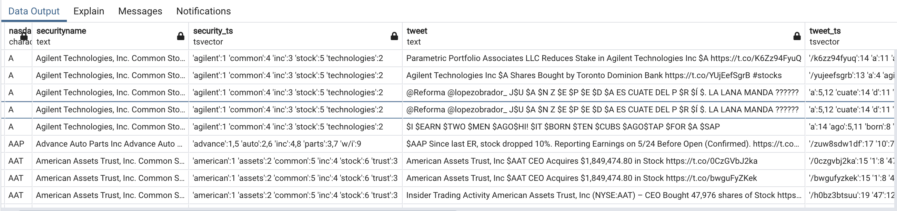
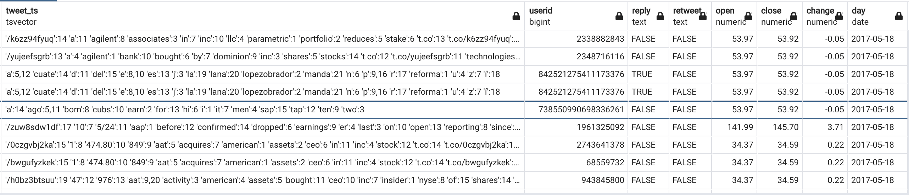

7. Lecture 6: (de)Normalization & Data Warehousing¶
Gittu George, January 20 2022
7.1. Todays Agenda¶
Quick Recap
WHAT is a Data Warehouse?
WHY Data Warehouse?
HOW do we build a data warehouse?
Differences
Wrap up
7.2. Learning objectives¶
Understanding of data warehouse.
Building a data warehouse.
Connecting our learning from previous classes.
7.3. Quick Recap¶
Building workflows to generate actionable insights using data
How to take raw data from independent sources and load it to the database
How to take the data and manage it within a database, using normalization, using data standards (schema.org) & referential integrity (fk/pk) to ensure data is clean
How to speed up the underlying infrastructure with proper use of indexes
The importance of reproducible workflows to ingest data to ensure data is clean and well organized
This will be our last class talking about relational databases.
7.4. WHAT is a Data Warehouse?¶
A Data Warehouse is a Data Management System
Data Analysts and BI Experts query a front end
Data is ingested in the back-end from multiple sources
A Data Warehouse simplifies data access and analysis.
Its indeed data stored in a database but in a denormalized fashion
It’s generally a process,
{kind=link}
Data moves from data sources to a data warehouse and specialized data marts.
Users access information from the data warehouse/data mart.
Users access data through applications.
When building a data warehouse, we’re taking data from multiple sources and joining it in a comprehensive way to support multiple purposes, from reports and app-based analytics to data mining and machine learning applications.
How do you think a data warehouse may look like?
7.5. General structure of Data Warehouse¶
7.5.1. Reciept story¶
{kind=link}
Image source: wikiMedia
Fact Table: A table that contains the measurements of a business process of interest (in red). Dimension Table(s): Tables that provide context for the fact table (in violet).
Let’s look at a real world example,
{kind=link}
A Data Warehouse results from a process that takes data and transforms it into a “fact table” that a range of users can access. These facts are represented in a manner that is suited to analysis & use by a broad set of users. In addition, it powers up BI Applications like PowerBI or Tableau.
7.6. WHY¶
Data Can Be Complex
Multiple Sources
Multiple Uses
Multiple Users
Varied Skill Levels
Changing Data & Data Needs
7.7. Goals of Data Warehousing & BI¶
The Data Warehouse system must:
Make information easily accessible
Present information consistently
Adapt to change
Present information in a timely way
Be secure
Be authoritative & trustworthy
Be accepted by end-users
7.7.1. So How Do We Meet Expectations?¶
We have this dimensional model influenced by the business requirements & data realities.
The Data Warehouse Design must be collaborative for the expectations to be met. Some parties include;
IT Managers
Executives
BI Analysts
Department Members
App Designers
{kind=link}
7.8. How Do We Build a Data Warehouse?¶
You are already in the process of building an enterprise data warehouse. Here are the steps that you already did;
You identified the data sources
You performed data cleaning and normalization to load the data properly into the database
You are already doing some analysis on the data
Even though you are already doing some joins to get to the analysis, we haven’t properly identified the facts and dimensions for denormalizing the data to one flat table. So let’s go through our Twitter data to see how this process looks like.
7.8.1. in our Twitter data, eg¶
What is the question?
Data we got in hand?
What Facts Do We Need?
What are Facts? What are the Dimensions of those facts?
A Data Warehouse is a type of database, but it conforms to a different data model. It’s focused on a Fact Table with multiple dimensions.
A Data Warehouse is part of a workflow that gets us from raw data (directly from a business process like sales, purchases, quality assessment metrics, real estate holdings, or some other measure) to a dataset easily queried and modeled as part of an analytics team.
Thinking of our Twitter data, we had a central question that asked if daily cashtag volume was positively correlated to stock price changes. So, we took raw tweet data, stock symbol, and price data from multiple sources (Twitter, NYSE, Yahoo! Finance), came up with a data model and undertook data cleaning.
If we’re interested in understanding relationships between the tweets and changes in price, we might want to look at some different analyses. For example:
Sentiment analysis on tweets
Presence of key terms (“sell” or “buy”)
Changes in price
Analysis by individual ticker
Aggregation at different scales (week, month)
If we do that, we would want to work on a single table to undertake our analysis, so we’re assured that there is consistency in our analysis.
Here is the query we might use:
SELECT sy.nasdaqsymbol,
sy.securityname,
cl.tweet,
cl.userid,
CASE WHEN rp.replyid IS NULL THEN 'FALSE'
ELSE 'TRUE' END AS reply,
CASE WHEN rt.retweetid IS NULL THEN 'FALSE'
ELSE 'TRUE' END AS retweet,
ROUND(sv.open::numeric,2) AS open,
ROUND(sv.close::numeric, 2) AS close,
ROUND(sv.close::numeric, 2) - ROUND(sv.open::numeric,2) AS change,
date_trunc('day', cl.createdate)::date AS day
FROM tweets.cashtags AS ct
INNER JOIN tweets.cleantweets AS cl ON cl.tweetid = ct.tweetid
INNER JOIN tweets.symbols AS sy ON sy.symbolid = ct.symbolid
INNER JOIN tweets.stockvalues AS sv ON sv.symbolid = sy.symbolid AND sv.date = date_trunc('day', cl.createdate)::date
LEFT JOIN tweets.replies AS rp ON rp.tweetid = cl.tweetid
LEFT JOIN tweets.retweets AS rt ON rt.tweetid = cl.tweetid;
We’re putting back the columns together and making some decisions about how we treat the data; for example, we’re just adding a boolean (TRUE/FALSE) as to whether something is tweeted or retweeted (using the CASE WHEN statements).
To create the wide table, given that this is essentially a derived table, we’re going to use a MATERIALIZED VIEW. This means that the output is committed to the disk, but it results from a query, so it’s not something we’re going to update directly.
So our call would look something like this:
CREATE MATERIALIZED VIEW tweets.dtwide AS
SELECT sy.nasdaqsymbol,
sy.securityname,
cl.tweet,
cl.userid,
CASE WHEN rp.replyid IS NULL THEN 'FALSE'
ELSE 'TRUE' END AS reply,
CASE WHEN rt.retweetid IS NULL THEN 'FALSE'
ELSE 'TRUE' END AS retweet,
ROUND(sv.open::numeric,2) AS open,
ROUND(sv.close::numeric, 2) AS close,
ROUND(sv.close::numeric, 2) - ROUND(sv.open::numeric,2) AS change,
date_trunc('day', cl.createdate)::date AS day
FROM tweets.cashtags AS ct
INNER JOIN tweets.cleantweets AS cl ON cl.tweetid = ct.tweetid
INNER JOIN tweets.symbols AS sy ON sy.symbolid = ct.symbolid
INNER JOIN tweets.stockvalues AS sv ON sv.symbolid = sy.symbolid AND sv.date = date_trunc('day', cl.createdate)::date
LEFT JOIN tweets.replies AS rp ON rp.tweetid = cl.tweetid
LEFT JOIN tweets.retweets AS rt ON rt.tweetid = cl.tweetid;
I ran this already. Looking at the “Materialized View” tab in pgAdmin, you’ll see the view there. It’s a table with three million rows, so we may want to add some indices to the table to speed up our query speed.
For students not doing this exercise with me, I am putting a snapshot of this table so that you can follow along.
 The B-Tree index is most appropriate for most of the columns. We may choose some other indexes for some of the other columns. Let’s take a look:
The nasdaqsymbol column is simple, and we’re unlikely to be searching for anything
But let’s pause for a minute and consider further what we’re planning on doing with the data. This will also help us plan out what indexes we might add to help speed things up.
The B-Tree index is the default in Postgres and may be most appropriate for most columns. We may choose other indexes for some of the other columns and might even see other transformations we should apply to the data. Let’s take a look:
The
nasdaqsymbolcolumn could either use a B-TREE index or a HASH index. A HASH index is likely more appropriate if the ratio of unique symbols to total rows is very high (there are few unique symbols and many rows). However, remember that a hash index is only useful for equality. Are we likely to want to do analysis on stock symbols based on their letter configuration? (e.g., all stocks that start with ‘A’), or is it more likely that we’re just looking at matches?
CREATE INDEX tweets.symbolhash_idx ON tweets.dtwide USING hash(nasdaqsymbol);
CREATE INDEX tweets.symbolhash_idx ON tweets.dtwide USING btree(nasdaqsymbol);
securitynameis something we might query, looking for things like ‘Common Stock’ or ‘ETF’ along with searches for the name of a company. In this case, full-text search may well be useful. If we want to use full-text search, then, consulting the Postgres full-text search documentation, we might want to add a column that uses atsvector()transformation of thesecuritynamecolumn. We’ll add it to our materialized view as the column security_ts and then work on an index:
CREATE INDEX securitysearch_idx ON tweets.dtwide USING GIN (security_ts);
This will allow us to use direct matching or full-text search to find the appropriate columns.
tweetswould be similar to thesecurityname, so we’ll add the same index and transformation.replyandretweethave only two values, ‘TRUE’ and ‘FALSE’, so a hash index here is also likely useful.open,closeandchangeare numeric values. We’d likely be searching using statements likeopen > 10, or some sort of equality. In that case, abtreeindex is likely sufficient.dayis interesting. If the dataset is not ordered byday, we could use abtreeindex. If we were only searching by exact matches, ahashmight be useful here. IF HOWEVER we order ourMATERIALIZED VIEWbyday, then we can use abrinindex. Thebrinindex assigns values to ordered address blocks.
So, this leaves us with some extra transformations and a set of indexes to apply:
CREATE MATERIALIZED VIEW tweets.dtwide AS
SELECT sy.nasdaqsymbol,
sy.securityname,
to_tsvector(sy.securityname) AS security_ts,
cl.tweet,
to_tsvector(cl.tweet) AS tweet_ts,
cl.userid,
CASE WHEN rp.replyid IS NULL THEN 'FALSE'
ELSE 'TRUE' END AS reply,
CASE WHEN rt.retweetid IS NULL THEN 'FALSE'
ELSE 'TRUE' END AS retweet,
ROUND(sv.open::numeric,2) AS open,
ROUND(sv.close::numeric, 2) AS close,
ROUND(sv.close::numeric, 2) - ROUND(sv.open::numeric,2) AS change,
date_trunc('day', cl.createdate)::date AS day
FROM tweets.cashtags AS ct
INNER JOIN tweets.cleantweets AS cl ON cl.tweetid = ct.tweetid
INNER JOIN tweets.symbols AS sy ON sy.symbolid = ct.symbolid
INNER JOIN tweets.stockvalues AS sv ON sv.symbolid = sy.symbolid AND sv.date = date_trunc('day', cl.createdate)::date
LEFT JOIN tweets.replies AS rp ON rp.tweetid = cl.tweetid
LEFT JOIN tweets.retweets AS rt ON rt.tweetid = cl.tweetid
ORDER BY date_trunc('day', cl.createdate)::date ASC;
And then add the following indices:
CREATE INDEX symbol_idx ON tweets.dtwide USING GIN(security_ts);
CREATE INDEX tweet_idx ON tweets.dtwide USING GIN(tweet_ts);
CREATE INDEX nasdaq_idx ON tweets.dtwide USING btree(securityname);
CREATE INDEX userid_idx ON tweets.dtwide USING hash(userid);
CREATE INDEX reply_idx ON tweets.dtwide USING hash(reply);
CREATE INDEX retweet_idx ON tweets.dtwide USING hash(retweet);
CREATE INDEX open_idx ON tweets.dtwide USING btree(open);
CREATE INDEX close_idx ON tweets.dtwide USING btree(close);
CREATE INDEX change_idx ON tweets.dtwide USING btree(change);
CREATE INDEX day_idx ON tweets.dtwide USING BRIN(day);
We can directly query our own mini-data warehouse using simple SQL queries given these changes and new indices. For example,
SELECT symbol, ROUND(change / open, 2), COUNT(*) AS tweets
FROM tweets.dtwide
GROUP BY day, symbol, change;
It would give us the relationship between the number of tweets in a day and the proportional change in stock value. All of this work then allows us to simplify our workflow:
import os
import psycopg2
import psycopg2.extras
import random
from dotenv import load_dotenv
import time
import datetime
import pandas as pd
load_dotenv()
conString = {'host':os.environ.get('DB_HOST'),
'dbname':os.environ.get('DB_NAME'),
'user':os.environ.get('DB_USER'),
'password':os.environ.get('DB_PASS'),
'port':os.environ.get('DB_PORT')}
conn = psycopg2.connect(**conString)
cur = conn.cursor()
cur.execute("""SELECT nasdaqsymbol, ROUND(change / open, 2), COUNT(*) AS tweets
FROM tweets.dtwide
GROUP BY day, nasdaqsymbol, change, open;""")
summarized = pd.DataFrame(cur.fetchall(), columns=['nasdaqsymbol', 'change', 'tweets'])
import plotly.express as px
fig = px.scatter(summarized,
x='tweets',
y='change',
title='Stock value change by tweet count.',
hover_name='nasdaqsymbol',)
cur.close()
fig.show()
7.9. Differences¶
7.9.1. DW vs RMDBS¶
Database |
Data Warehouse |
|---|---|
Concerned with data security and durability |
Concerned with broad access for analysis |
Highly normalized to ensure referential integrity & reduce update/insertion anomalies. |
Denormalized to ensure ease of access |
Designed to support data ingestion. |
they are only updated by the system |
Data can go in and out |
User data goes out, not in |
7.9.2. ETL vs ELT¶
ETL |
ELT |
|---|---|
Extract, Transform and Load |
Extract, Load and Transform |
Data is loaded after performing transformation |
Data first loaded and then transformed |
Mostly used for structured data |
Mostly used for unstructured data |
SQL based databases |
NoSQL based systems |
For building Data Warehouses |
For building data lakes |
7.9.3. OLAP vs OLTP¶
OLAP |
OLTP |
|---|---|
Online analytical processing |
Online transactional processing |
Focus on Insert, Update, Delete for databases |
Focuses on extract data for analyzing |
uses the data warehouse |
uses the database |
7.9.4. BI vs DW¶
Data warehouse powers up BI. (Business intelligence)